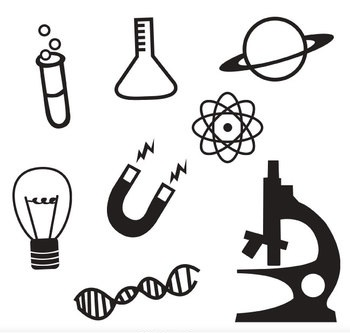

Science Stream – Nature, Scope and Why to Study
Jules Henry Poincaré, the great French mathematician, theoretical physicist and philosopher of science once famously stated – “The scientist does not study nature because it is useful; he studies it because he delights in it, and he delights in it because it is beautiful. If nature were not beautiful, it would not be worth knowing, and if nature were not worth knowing, life would not be worth living.”
If you feel that you identify with what is being said in the above quote, then the science stream is definitely one that you can pursue. Although interest and liking of a particular stream does not alone justify choosing it, the Science stream is the kind of field where one cannot survive without having even a modicum of interest accompanied by passion for it.
Science can be defined as a systematic study and investigation of natural phenomena and occurrences by way of observation, theoretical explanation as well as experimentation. A scientific study of any phenomena involves careful observation, formulation of hypotheses, conducting experiments to test and prove the hypotheses and henceforth drawing conclusions that confirm or deny the hypothetical assumption. Such scientific studies help in the formulation of universal laws that help humans to know more about the world we live in and how various natural processes and phenomena occur.
Science is a vast field and concerns almost everything that our eyes can see or cannot see. Everything in the universe can be studied under the field of science. Talking at a basic educational level, science can be divided into three broad subjects – Physics, Chemistry and Biology.

PHYSICS:
Physics is a natural science that involves the study of matter and its motion through space-time, as well as all applicable concepts such as energy and force. Broadly speaking, it is general analysis of nature, conducted in order to better understand how the world and the universe behave.
Following are some reasons why studying Physics can help us:
Physics is a natural science that involves the study of matter and its motion through space-time, as well as all applicable concepts such as energy and force. Broadly speaking, it is general analysis of nature, conducted in order to better understand how the world and the universe behave.
Following are some reasons why studying Physics can help us:
- physics teaches us how the universe works, giving us an understanding about why certain things happen.
- Studying physics tells us more about how the earth, the solar system and the galaxies came to be and how matter came into existence, giving us a deeper understanding about our physical world.
- Learning how the earth works by studying physical science helps us to plan beforehand and survive natural events such as earthquakes, tornadoes, and tsunamis.
- Learning how the universe works by studying physical science helps us to see connections between all things.
- Studying the laws of physics enables us to create better technologies in all areas that concern human being and their environment.
CHEMISTRY:
Chemistry is the science of matter and the changes that it undergoes. The science of matter also comes under the scope of physics. However, physics takes a more general and fundamental approach, chemistry is more specialized, being concerned with the composition, behavior, structure, and properties of matter, as well as the changes it undergoes during chemical reactions..
Following are some reasons why studying Physics can help us:
Chemistry is the science of matter and the changes that it undergoes. The science of matter also comes under the scope of physics. However, physics takes a more general and fundamental approach, chemistry is more specialized, being concerned with the composition, behavior, structure, and properties of matter, as well as the changes it undergoes during chemical reactions..
Following are some reasons why studying Physics can help us:
- Enabling us to assess the chemical composition and structure of material samples
- Helping in gaining a better understanding several physical concepts such as thermodynamics and quantum mechanics
- Imparting knowledge on how chemicals and substances are formed, their physical properties and how certain chemical substances can be used for the benefit of humans.
- Giving us knowledge of how the human body functions at a cellular level and the various chemical and neuro-chemical processes.
- Understanding the chemical nature of substances by studying chemistry enables us in gaining a better knowledge of how they can be utilized in different areas of human society, such as, building materials, materials strong enough for machinery, materials resistant to chemical and physical wear and tear etc..
BIOLOGY:
Biology is the study of anything that has life. It is a natural science concerned with the study of life and living organisms, including their structure, function, growth, origin, evolution, distribution, and taxonomy. Biology has many sub-categories like microbiology, botany, and zoology.
Some reasons regarding why Biology can be studied are:
Biology is the study of anything that has life. It is a natural science concerned with the study of life and living organisms, including their structure, function, growth, origin, evolution, distribution, and taxonomy. Biology has many sub-categories like microbiology, botany, and zoology.
Some reasons regarding why Biology can be studied are:
- Biology teaches us about how living things work, helping us to understand our own bodily functions, organ systems and health.
- It teaches us about how living things survive and why different organisms have adapted and evolved to behave in certain ways
- Biology also teaches how living things are all connected to one another, helping us to see why it is important that we preserve our planet and the creatures on it.
- Studying biology gives us knowledge that can be utilized for the betterment of health facilities, cures and preventive measures for diseases and health issues, etc.
- Studying biology also helps in the control and prevention of endemics, epidemics and pandemics